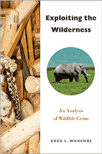

<body bgcolor="#FFFFFF" text="#000000" link="#0000FF" vlink="#CC0000" alink="#CC0000"><center><hr width="350" size="1" align="center" noshade>A contemporary criminological analysis of the African and Asian illegal trade in wildlife<hr width="350" size="1" align="center" noshade><p><a href="https://cdcshoppingcart.uchicago.edu/Cart/ChicagoBook.aspx?ISBN=&&PRESS=temple" target="_top">Buy this book!</a> | <a href="https://cdcshoppingcart.uchicago.edu/Cart/Cart.aspx?PRESS=temple" target="_top">View Cart</a> | <a href="https://cdcshoppingcart.uchicago.edu/Cart/Cart.aspx?PRESS=temple" target="_top">Check Out</a></p><p></p></center><!--none//--><h1 class = "booktitle">Exploiting the Wilderness</h1> <h1 class = "subtitle">An Analysis of Wildlife Crime</h1>
<h3>Greg L. Warchol </h3>
paper: $28.95, Nov 17<BR>EAN:&nbsp;978-1-4399-1367-3<BR><font color=#990033>Not Yet Published Preorder</FONT><font size=-7><br>&nbsp;</font></p><p class="info">cloth: $92.50, Nov 17<BR>EAN:&nbsp;978-1-4399-1366-6<BR><font color=#990033>Not Yet Published Preorder</FONT><font size=-7><br>&nbsp;</font></p><p class="info">e-book: $28.95, <BR>EAN:&nbsp;978-1-4399-1368-0<BR><font color=#990033>Not Yet Published Preorder</FONT><font size=-7><br>&nbsp;</font></p></p></td></tr></table>
<BR> <p class="info">208 pp<BR> 6 x 9<BR> 2 tables, 16 halftones, 2 maps <p class="info"><font size=-7>&nbsp;</font></p><p class="info">
</P><BLOCKQUOTE></BLOCKQUOTE>
<p>Illegally harvested ivory and endangered plants, mammals, reptiles, birds, and even insects are easily found for sale throughout East and Southern Africa. And this is just one part of the multi-billion-dollar illegal global trade in wildlife. <br/><br/>Wildlife is an important and even vital asset for both intrinsic and economic reasons. Yet it is illegally exploited on a massive scale to the point where some species now risk extinction. <i>Exploiting the Wilderness </i>provides a concise overview of this shameful business, describing some of the main species being exploited and examining select wildlife whose survival is imperiled due to heavy pressure from poachers to meet consumer demand. <br/><br/>Greg Warchol draws on his firsthand experience and research in Africa to examine the structure and operation of the illegal trade in wildlife. He identifies the participants as well as their motivations and operations, and explains the behavior of poachers, traffickers, and consumers of illegally obtained goods. He concludes with a description of legislative and law enforcement efforts to control and prevent wildlife exploitation along with a number of contemporary conservation initiatives designed to improve the ability of rangers to protect wildlife.<br>
<P CLASS="top"><A HREF="#top">BACK TO TOP</A></P>&nbsp;
<BR>&nbsp;
&nbsp;<P>
</P><BR>&nbsp;
<H2 class="inpageheading"><A NAME="author bio"></a>About the Author(s)</H2><p><b>Greg L. Warchol </b>is Professor of Criminal Justice at Northern Michigan University.<br>
<P CLASS="top"><A HREF="#top">BACK TO TOP</A></P>
<p><h2 class="inpageheading"><a name="subjects"></a>Subject Categories</h2> <p><a href="http://www.temple.edu/tempress/law.html" target="_top">Law and Criminology</a> <br><a href="http://www.temple.edu/tempress/nature.html" target="_top">Nature and the Environment</a> <br><a href="http://www.temple.edu/tempress/animal_soc.html" target="_top">Animals and Society</a> <br><a href="http://www.temple.edu/tempress/african_studies.html" target="_top">African Studies</a> <br><a href="" target="_top"></a> </p>
</p>
<P>
</P>
<p align="center"><a href="https://cdcshoppingcart.uchicago.edu/Cart/ChicagoBook.aspx?ISBN=&&PRESS=temple" target="_top">Buy this book!</a> | <a href="https://cdcshoppingcart.uchicago.edu/Cart/Cart.aspx?PRESS=temple" target="_top">View Cart</a> | <a href="https://cdcshoppingcart.uchicago.edu/Cart/Cart.aspx?PRESS=temple" target="_top">Check Out</a></p><p><font face="Arial" size="1"><a href="copyright.html" onMouseOver="window.status='Web Copyright Policy';return true;" onMouseOut="window.status=''" title="Web Copyright Policy">&copy;</a> 2017 <a href="http://www.temple.edu" target="new" onMouseOver="window.status='Link to Temple University home page';return true;" onMouseOut="window.status=''" title="Link to Temple University home page">Temple University</a>. All Rights Reserved. http://www.temple.edu/tempress/titles/2408_reg.html</font></p>